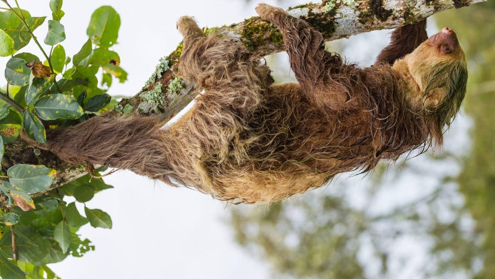
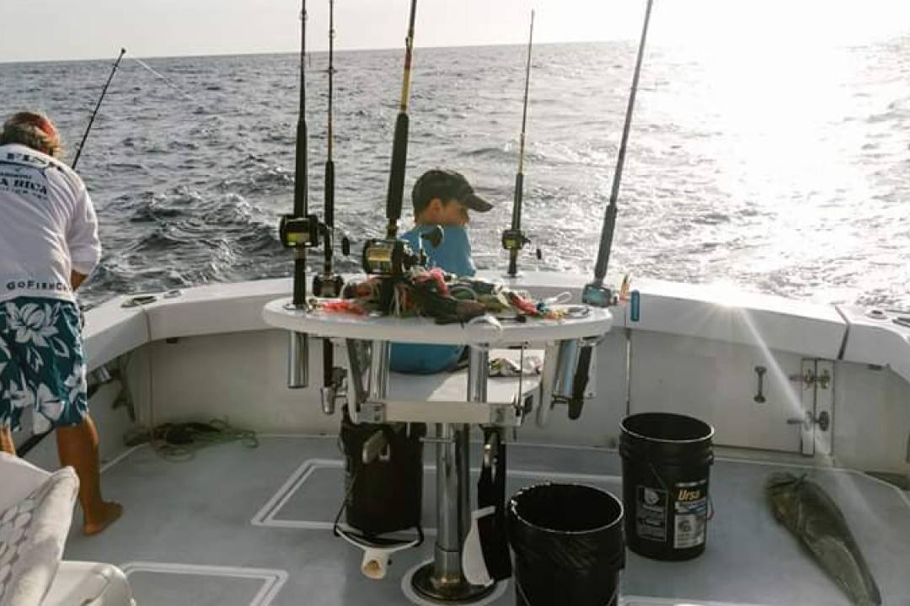
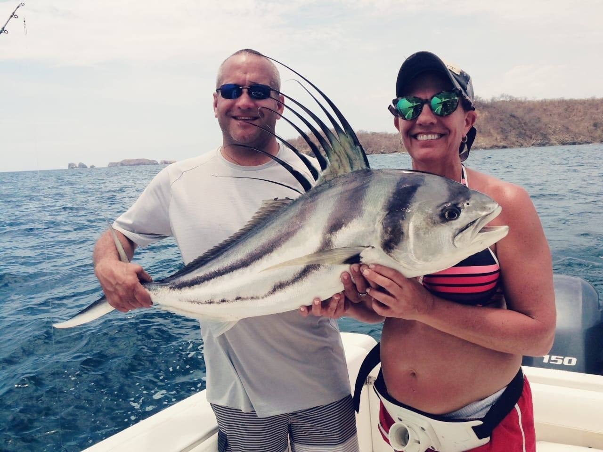
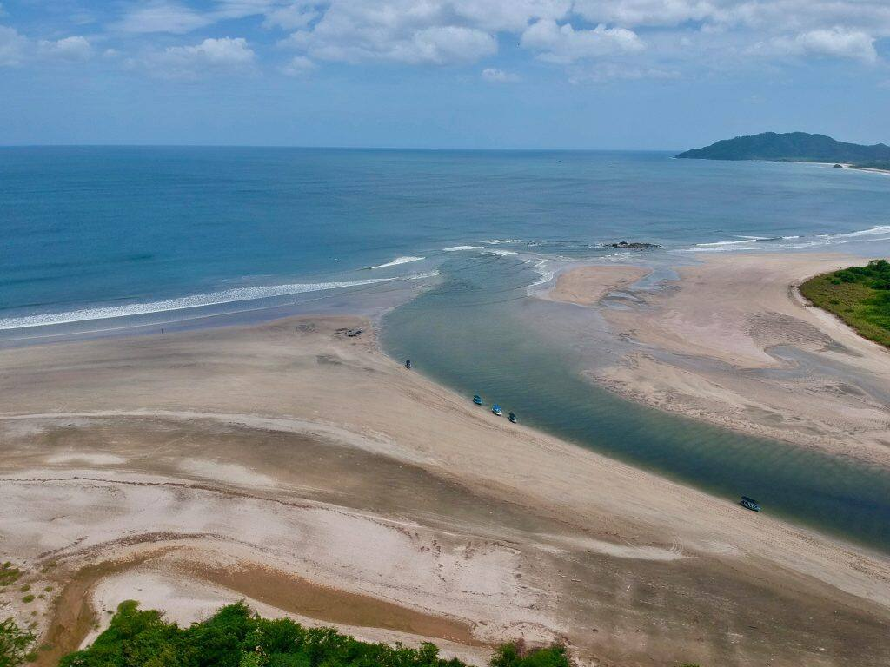
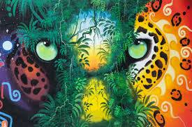

About Steve & Liisa
Two Canadians who left in 2010 and never went back.

Our pledge to you
Objective, personal, and on call from first email to last cast.

Crews & equipment
What every boat we send you on has to have.

Fish & seasons
What bites when on the Gold Coast, month by month.
Guanacaste fishing
IGFA record waters and why the North Pacific is different.

Weather
Live forecast for Tamarindo and Flamingo.

Contact us
Hours, bases and the fastest way to reach us.